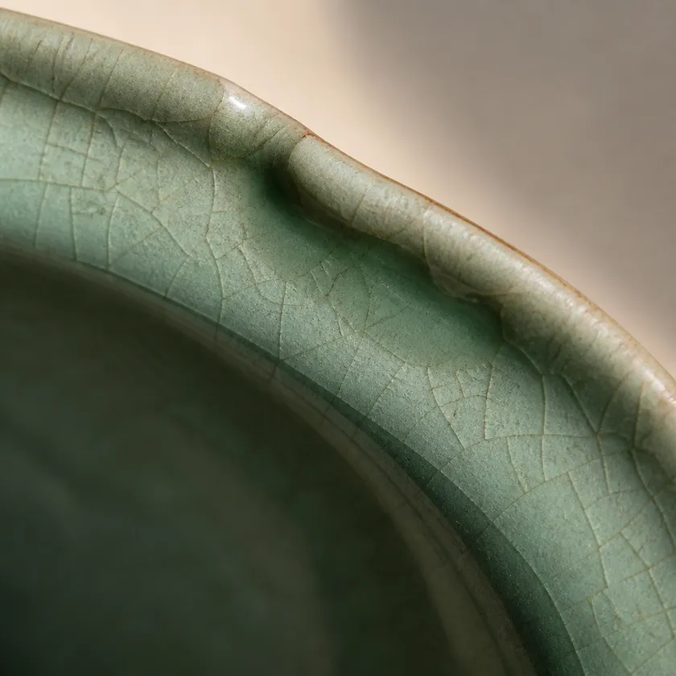
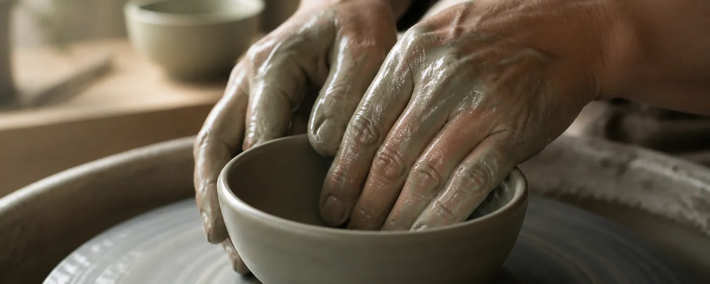
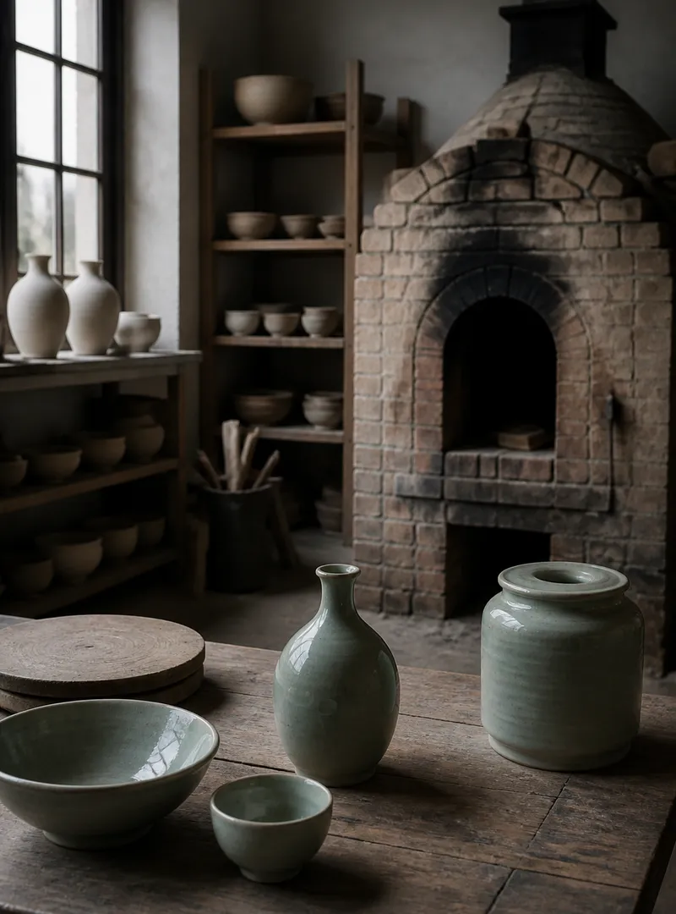
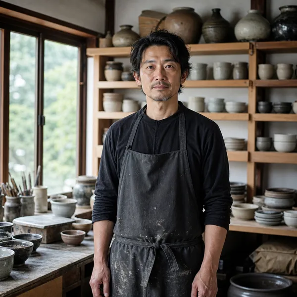
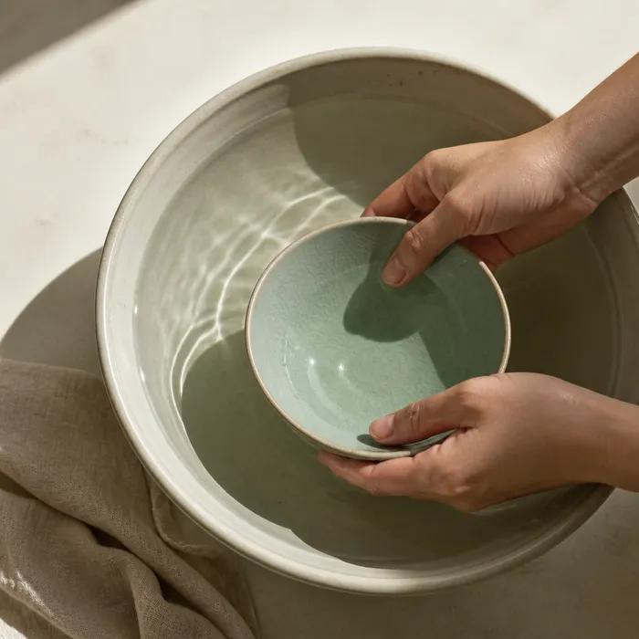
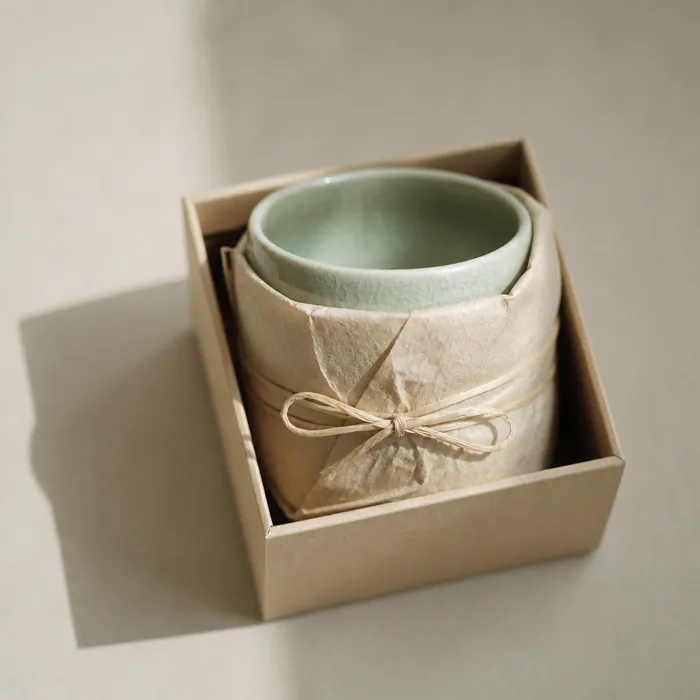
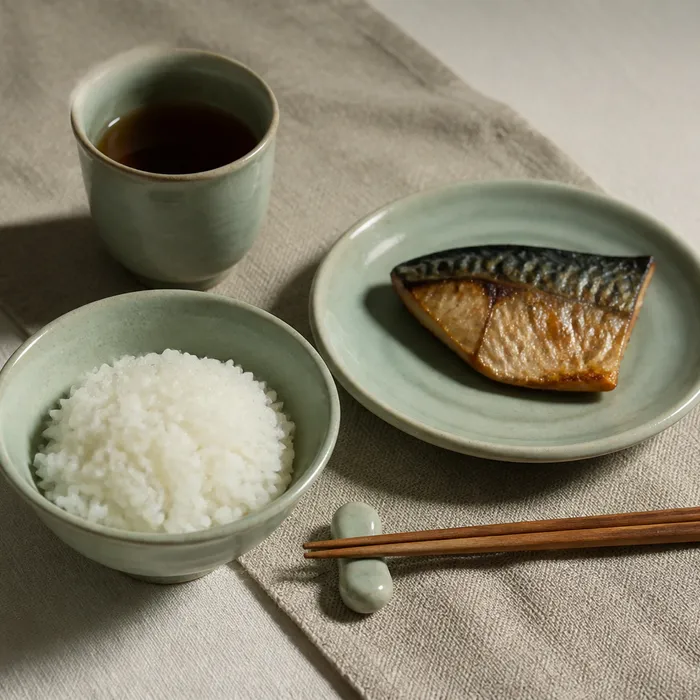

OUR MAKING
つくり方のこと
ひとつずつ、ろくろで挽いています。同じ形をねらっても、けっきょく少しずつ違う。その差を埋めないまま届けるのが、うちのやり方です。
毎日つかえること。洗いやすいこと。重ねて仕舞えること。つかう場面から逆算して、厚みと高台を決めています。
欠けたら直します。同じ釉薬で焼き直すこともできます。長くつかってもらう前提で、つくっています。
窯のことを読むSHOP
うつわを選ぶ
在庫のあるものだけを並べています。

土をさわる時間が、いちばん長い。
IN THE WORKSHOP
うみの県かえで市 ／ 登り窯

THE MAKER
つくり手のこと
祖父が始めた窯を、二代でつづけています。土は県内の山から掘ったものを寝かせて使い、釉薬は灰と長石を自分たちで調合しています。
年に四回、登り窯を焚きます。窯のなかの置き場所で色が変わるので、同じ棚の器でも一枚ずつ表情が違います。
直しの相談はいつでも受けています。

二代目 佐野 志郎Shiro Sano
JOURNAL
読みもの
GUIDE
はじめての方へ

お手入れ
はじめに一度、米のとぎ汁で煮ると汚れが入りにくくなります。洗ったらよく乾かしてから仕舞ってください。

配送・送料
5,500円以上のお買い上げで送料無料。それ以下は全国一律 660円。ご入金から3営業日以内に発送します。

返品・修理
届いてから7日以内はご返品を承ります。欠けは同じ釉薬で直せることがあります。まずは写真を添えてご連絡ください。